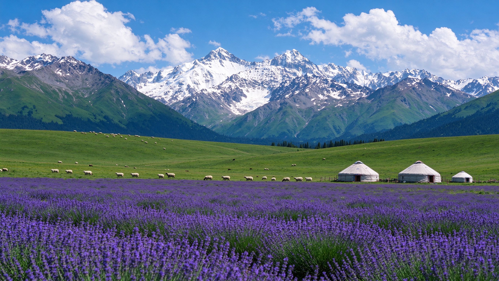
天山脚下，紫色花田、翠绿草原、金黄油菜与碧蓝湖泊在六七月同时铺开——这是伊犁一年里最绚烂的模样。
伊犁位于新疆西部、天山山脉西段的河谷地带，雨水丰沛、土地肥沃，草原、森林、雪山、河流与花海在此齐聚。它不是一个单点景区，而是一条以伊宁市为中心、沿河谷展开的风景环线。
伊犁的核心格局可以概括为「一湖、两草原、一花田」：高山湖泊赛里木湖如蓝宝石般卧在天山垭口；那拉提与喀拉峻两大草原是世界自然遗产，一个辽阔、一个柔美；霍城则是中国最大的薰衣草种植区，被称作「中国薰衣草之乡」。
再加上昭苏的天马与万亩油菜花、夏塔古道的木扎尔特冰川、特克斯八卦城、琼库什台的云杉木屋村，以及伊宁喀赞其的蓝色街巷，伊犁的层次远比想象中丰富。
更重要的是，这里的主场在夏天：六七月间薰衣草、草原野花、湖边野花与油菜花接力或同时绽放，雪山仍有积雪，是一年中色彩最饱和、最适合避暑的时节。
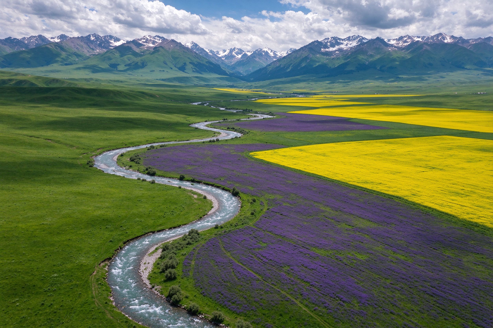
「大西洋最后一滴眼泪」，碧蓝湖水倒映雪山，六七月湖边野花、天鹅成群。
那拉提空中草原辽阔舒展，喀拉峻「人体草原」曲线柔美，均为世界自然遗产。
中国最大薰衣草产区，紫色花田铺到雪山脚下，与普罗旺斯、北海道齐名。
伊犁的春天从四月杏花开始，五六月草原野花与薰衣草接力，七月昭苏油菜花压轴。先确定怎么抵达集散地伊宁，再按花期安排路线。
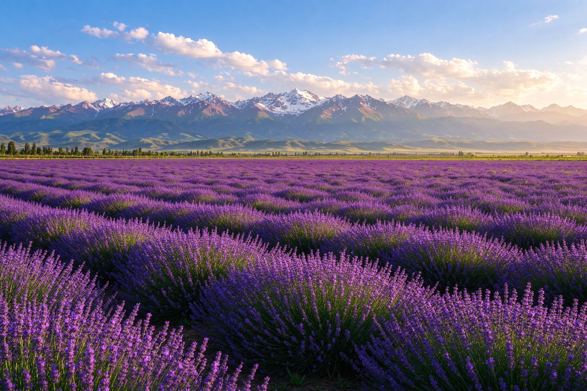
追花主题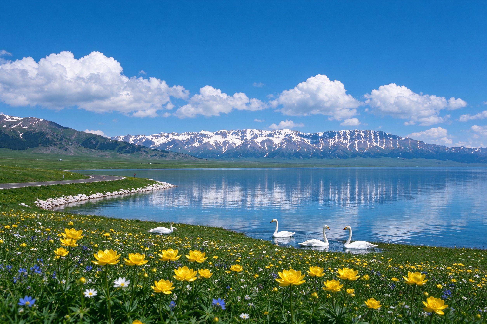
湖泊避暑抵达后逛喀赞其民俗村、六星街，傍晚到伊犁河大桥看日落，倒时差、适应节奏。
伊宁出发约 1.5 小时到赛湖，环湖 4–5 小时看雪山倒影与湖边野花，途经果子沟大桥观景台。
上午拍霍城薰衣草，午后经伊昭公路南下昭苏，傍晚看天马浴河表演。
清晨入园避开午后雷雨，乘区间车到雪山脚下，沿木栈道轻徒步，近距离看冰川森林溪流。
看人体草原曲线、鲜花台与峡谷，光影在草坡上流动，傍晚抵达特克斯。
上午登观光塔俯瞰八卦布局，午后前往琼库什台云杉村或直奔那拉提。
上午游空中草原、毡房与牛羊，午后返回伊宁，结束行程。
从高山草原到冰川峡谷、从工程奇观到八卦古城，这八处构成了伊犁环线的精华。
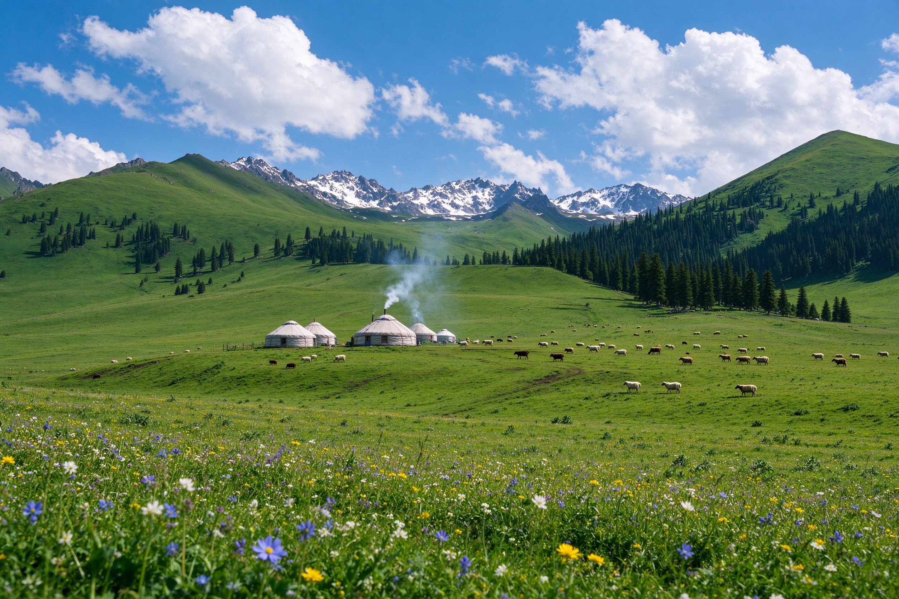
空中草原辽阔舒展，毡房炊烟、野花牛羊，5A 景区。
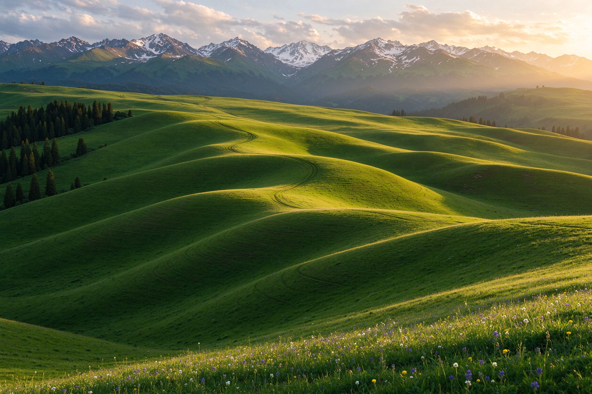
「人体草原」曲线柔美，夕阳侧光最能勾勒草坡起伏。
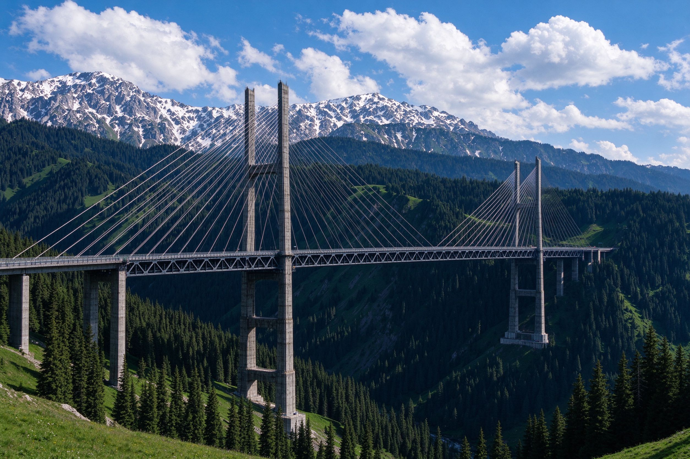
新疆最高 S 形斜拉桥横跨云杉峡谷，免费观景台可拍。
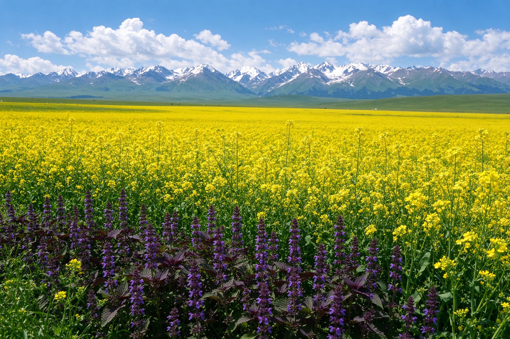
七月万亩金黄油菜花与紫苏，雪山脚下大地如织锦。
木扎尔特冰川下的雪山森林溪流，玄奘西行之路。
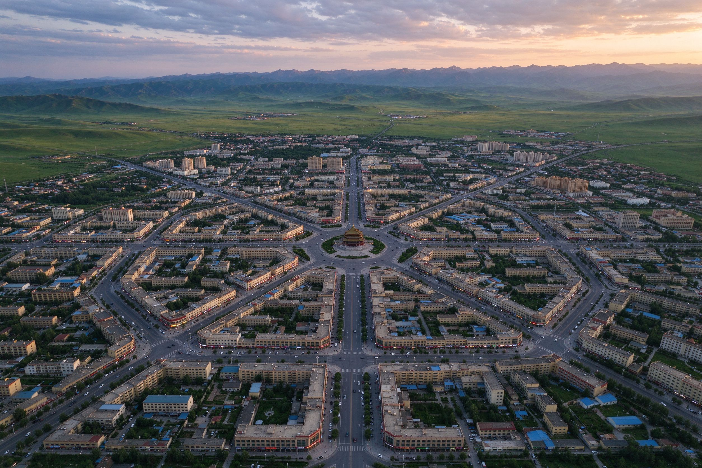
世界唯一八卦布局、没有红绿灯的城市，登塔俯瞰。
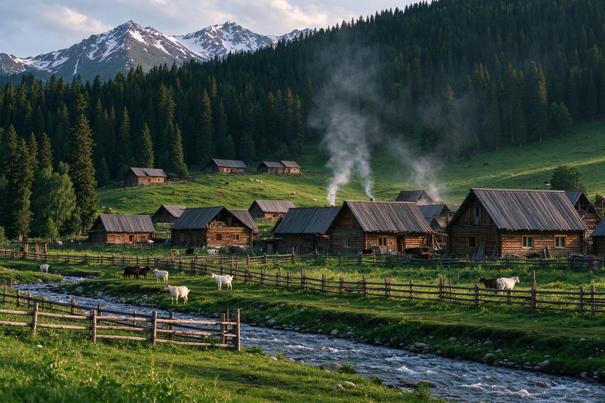
云杉环抱的哈萨克木屋古村，宛如童话里的山村。
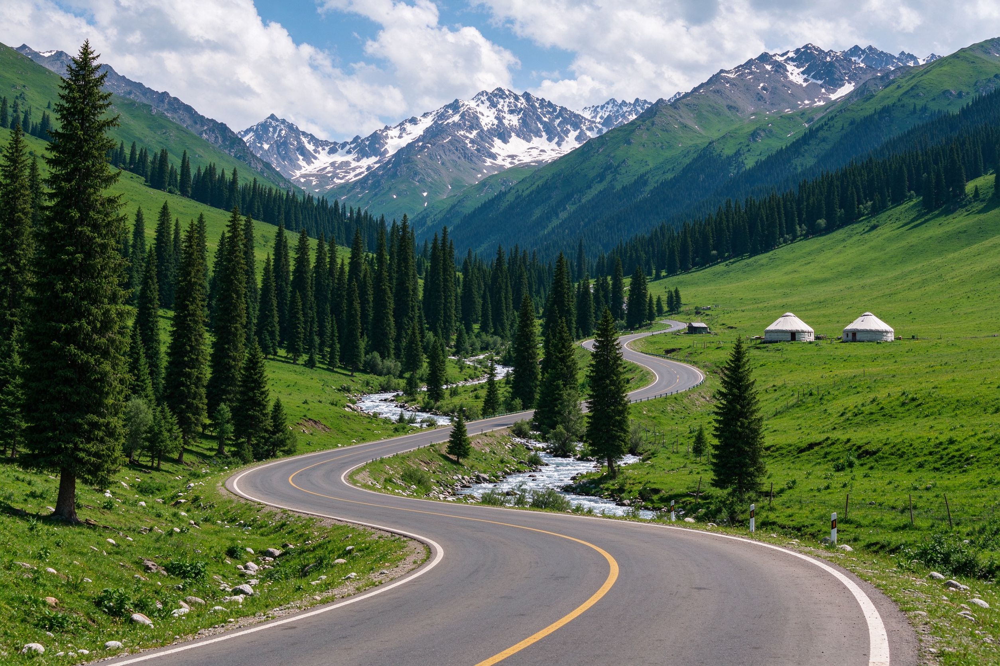
公路蜿蜒穿过云杉峡谷草原，百里画廊一步一景。
除了盛夏主线，四月还能追野杏花；伊宁市内的蓝色街巷与河谷日落，则是行程里最温柔的停顿。
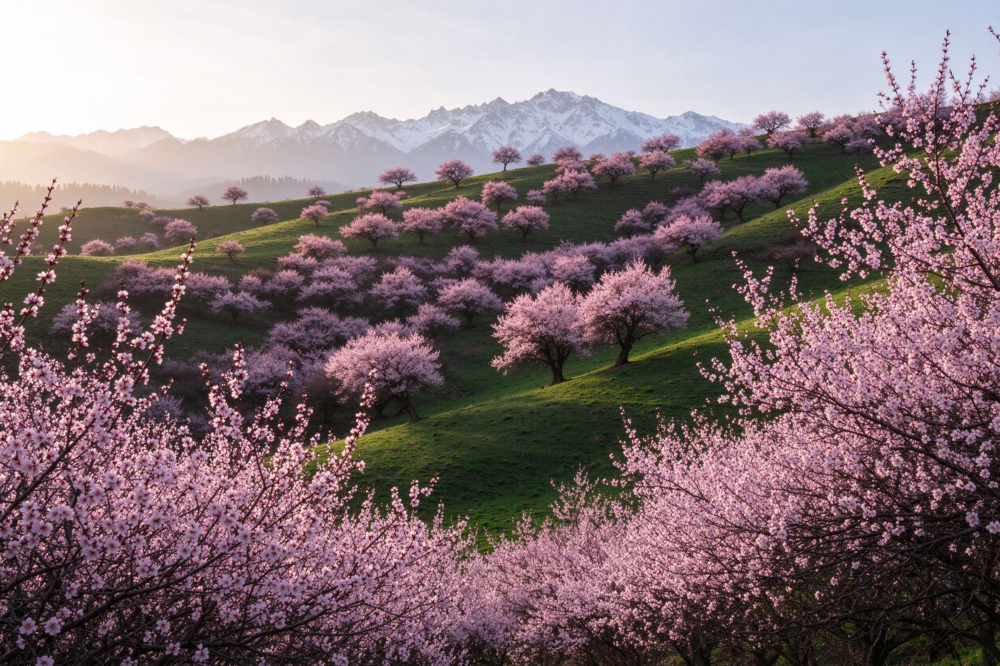
四月初野杏花沿山坡成片盛开如粉色云雾，是伊犁最早的春天；那拉提的白番红花（顶冰花）也在此时破冰而出。
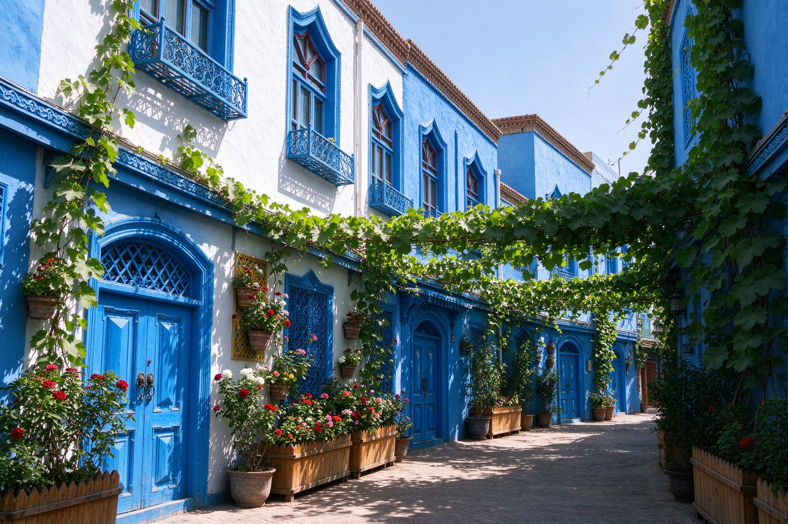
蓝色门窗、白墙与葡萄藤构成的维吾尔族老街，可坐马车、尝手工冰淇淋；六星街同样适合慢逛拍照。
夕阳把宽阔河面染成金红，归鸟、芦苇与晚霞构成塞外江南最经典的黄昏，适合抵达或返程当天。
春天有蓝冰与杏花，夏天是薰衣草与草原花海的主场，秋天草原转金、瓜果丰收，冬天清寂纯净。但若问最美，答案明确指向六七月。
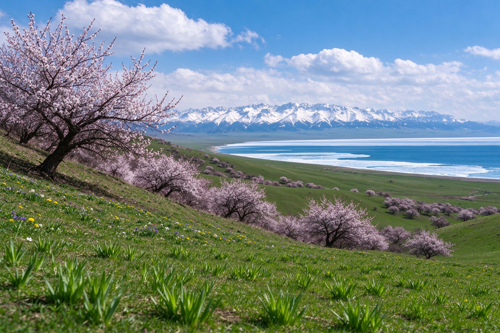
3–4 月赛湖蓝冰、吐尔根杏花，5 月草原新绿、天山红花初开，人少清静。
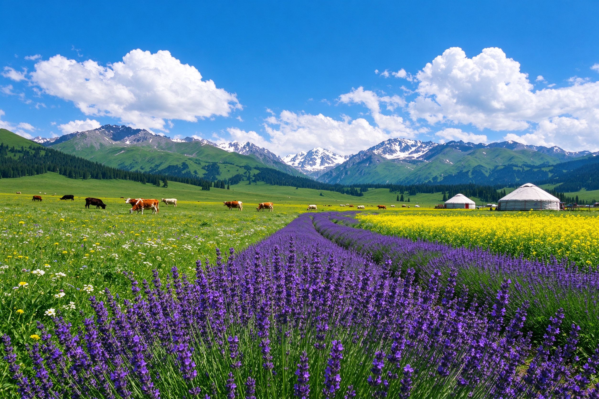
薰衣草、草原野花、湖边野花与油菜花接力绽放，雪山仍在，气候凉爽宜避暑。
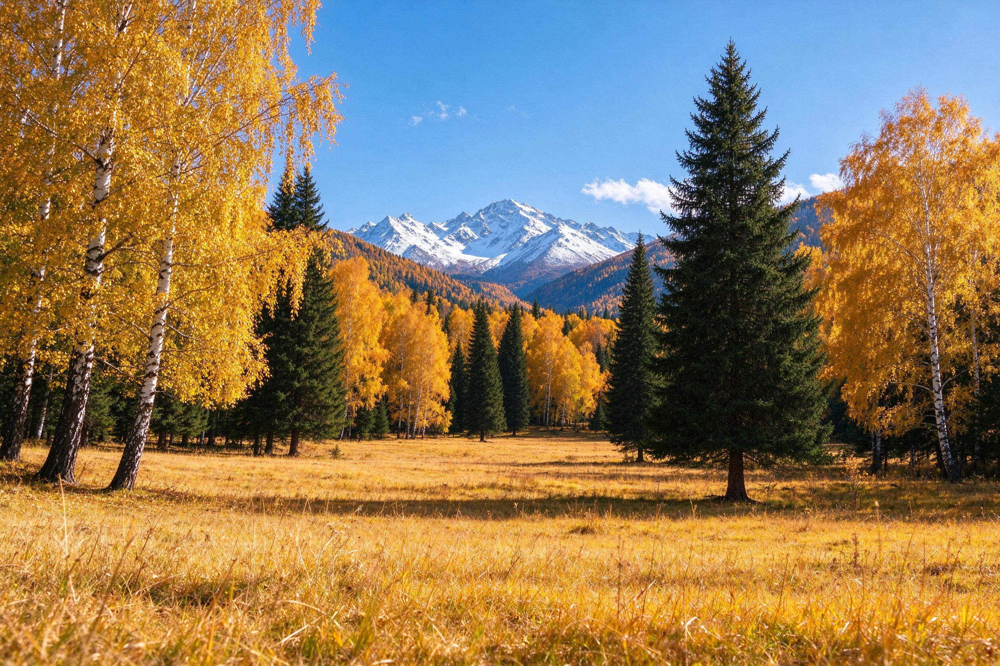
草原褪去翠绿换上金黄，山林层林尽染，瓜果丰收，独库公路封路前错峰。
草原与云杉覆盖白雪，赛湖蓝冰、天地苍茫，是一年中最安静的季节。
伊犁环线跨度大、昼夜温差明显、部分公路季节性开放，行前多一分准备，路上少一分意外。